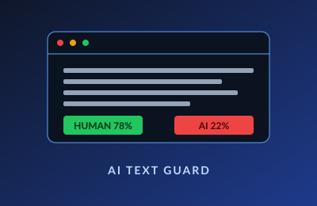

Overview
AI Text Guard is a web tool that takes a piece of writing — typed or extracted from an image — and reports back how likely the text was generated by an AI model. It combines an OCR pipeline with multiple AI-detection backends so the verdict isn't tied to any single model's quirks.
How It Works
- Input layer: users can paste text directly or upload an image; the OCR API transcribes the image into clean text.
- Detection layer: the transcribed text is sent to three independent AI-detection APIs in parallel.
- Scoring layer: the responses are normalized and aggregated into a single authenticity score, with each detector's individual reading still visible.
- UI: a clean, responsive interface built with HTML, CSS, JavaScript, and React Native idioms for the input components.
Why Three APIs?
Any single AI detector has blind spots. Surfacing the variance between detectors is more honest than handing the user a single confident number. If two of three sources disagree, the UI shows that disagreement instead of hiding it.
What I Learned
Working with multiple async APIs, normalizing inconsistent response shapes, and building a UI that conveys uncertainty rather than false confidence.
← Back to projects